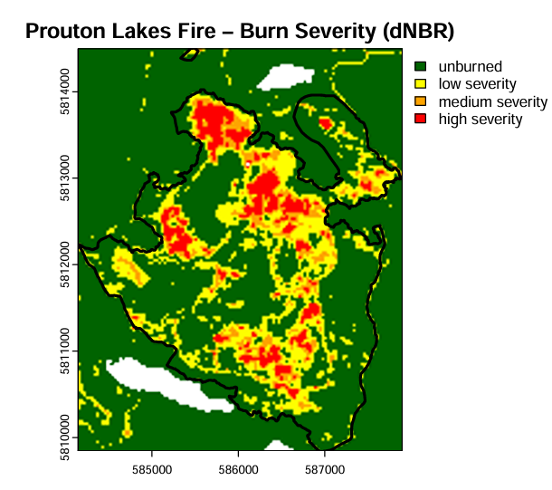
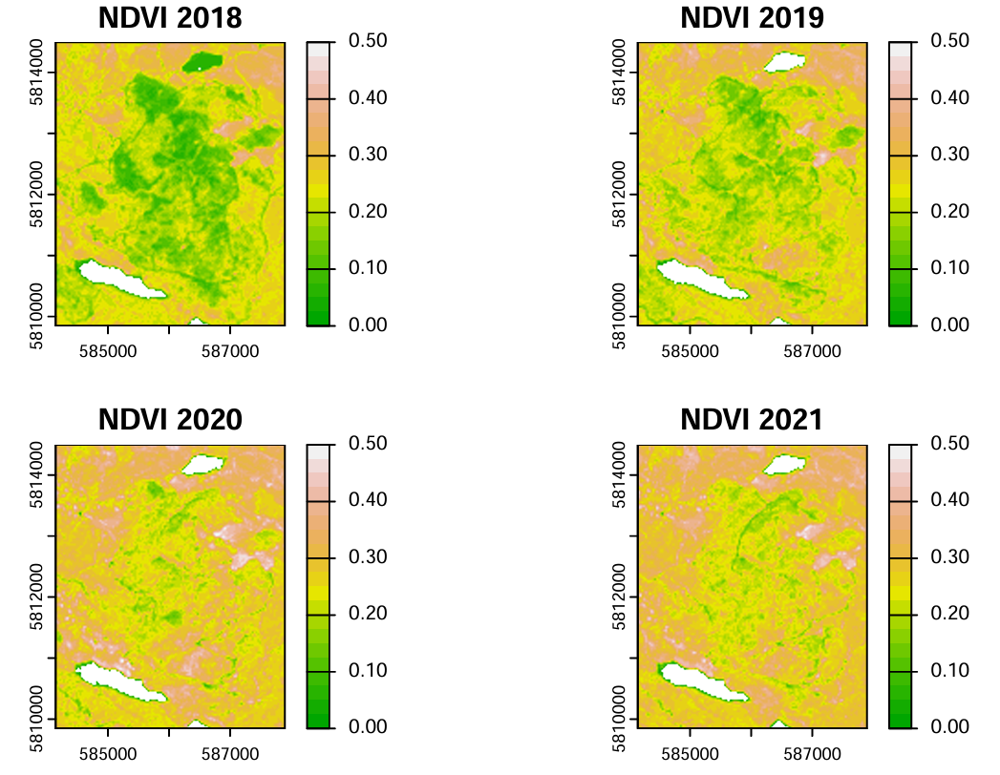

成果图像

基于 dNBR 的过火强度分级专题图（未过火/轻度/中度/重度）

NDVI 植被恢复趋势折线图（2013–2021年，呈现火后逐年恢复过程）
项目描述
- 整合多源预测变量：Landsat 衍生指数（NDVI、NBR、Tasseled Cap）、ASTER 地形数据（高程/坡度/坡向）、ClimateNA 气候栅格及 BC 林业资源清查（VRI）数据
- 通过 PostgreSQL 数据库构建多源预测变量数据集，完成多表连接与空间属性匹配
- 使用 ArcGIS Pro Moran's I 空间自相关分析与探索性回归（Exploratory Regression）工具，基于 R²、AIC、VIF 指标完成多变量共线性诊断与特征筛选
- 设计随机抽样、分层抽样、固定间隔抽样三种采样方案，使用 Random Forest（Forest-based Classification and Regression）分别构建燃料类型（分类）与冠层郁闭度（回归）预测模型
- 通过混淆矩阵、交叉验证及超参数调优（树深度、变量采样数、验证次数）系统评估不同采样策略与模型参数对预测精度的影响
- 计算归一化植被指数（NDVI）与归一化燃烧比（NBR），构建逐年 7–8 月合成影像，绘制 2013–2021 年植被恢复趋势折线图
- 基于火前(2015)/火后(2018) NBR 差值（dNBR）、参照 USGS 标准阈值完成过火强度分级，生成火场过火强度专题图
- 使用 ggplot2 分面箱线图比较不同过火强度下的植被恢复速率差异，定量验证"高强度过火区恢复更慢"的生态学规律
随机森林
ArcGIS Pro
PostgreSQL
Moran's I
NBR · dNBR
NDVI
分层抽样
多源数据融合
ggplot2